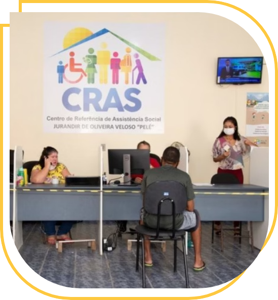
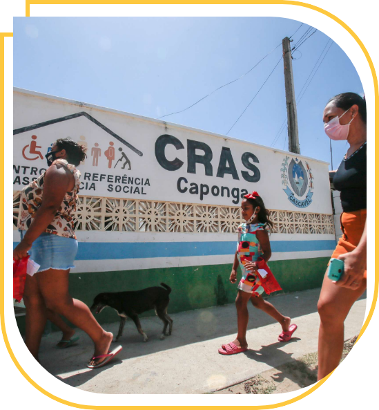
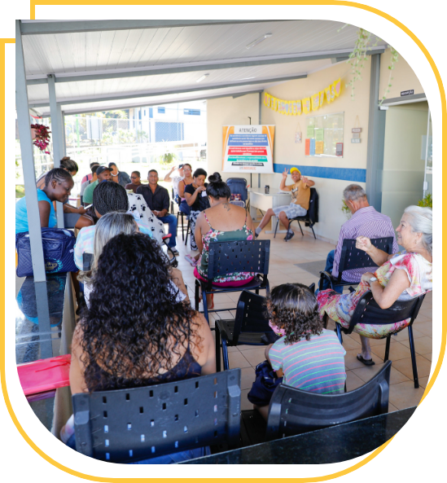
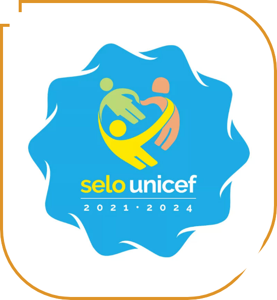

planejamento,
Intersetorialidade entre Assistência Social e Educação
A intersetorialidade entre assistência social e educação é um princípio fundamental para promover uma abordagem integral e eficaz no atendimento às demandas sociais e educacionais de indivíduos e comunidades. Essa interação é crucial para garantir que as políticas públicas funcionem de maneira sinérgica, potencializando os resultados e atendendo de forma mais adequada às necessidades da população.
Comunicação entre equipes
A intersetorialidade se concretiza por meio da comunicação efetiva entre as equipes envolvidas, o que requer planejamento, diálogo e a capacidade de articular ações conjuntas. Essas ações são essenciais para abordar contextos e demandas complexas, como pobreza, insegurança alimentar e trabalho infantil, que são expressões das desigualdades e vulnerabilidades sociais. A relação dialógica entre as equipes gera necessariamente a definição de objetivos comuns e específicos, além de ações coletivas que garantam a integralidade do atendimento aos segmentos sociais em situação de vulnerabilidade e risco social.
Atenção integral
Refletir sobre os caminhos para uma atenção integral no território requer a compreensão das atribuições das políticas sociais em resposta às demandas sociais multideterminadas. É essencial reconhecer as possibilidades de cada política atuar sobre demandas concretas, a fim de, de modo integrado, criar e definir novos acordos, fluxos e procedimentos conjuntos. Esse entendimento pressupõe a abertura para a partilha de saberes, o diálogo contínuo e a construção coletiva de respostas às necessidades e expectativas das comunidades locais. Para efetivar a intersetorialidade, é preciso combinar as dimensões setorial e intersetorial, considerando-a como um dever do Estado e um direito da cidadania.
Convergência
O primeiro princípio que rege essa relação parece ser o da convergência, um conjunto de impulsos para a ação em determinada situação, seja ela um objeto, um tema, uma necessidade, um território, um grupo, um objetivo ou uma perspectiva. No entanto, a intersetorialidade precisa ser corretiva de irracionalidades entre pessoal, funções ou gastos sobrepostos. Ela se apresenta como uma estratégia de gestão institucional que busca trazer mais qualidade, permitindo ultrapassar limites que ocorreriam na abordagem somente setorial (Sposati, 2006).

A intersetorialidade expressa a integração dos setores responsáveis pela provisão de serviços, programas, projetos e benefícios. Isso implica na racionalização e definição de processos institucionais que envolvem ações e estratégias como:
01
02
reuniões de rede,
03
diagnóstico,
04
capacitação,
05
ações educativas,
06
adoção de sistemas integrados,
07
atuações conjuntas,
08
planos integrados,
09
acompanhamento,
10
fluxos de comunicação e ação,
11
monitoramento e avaliação.
Algumas estratégias de atuação intersetorial podem ser destacadas (Silveira 2023):
Realização de oficinas que abordem temas como saúde coletiva, prevenção ao uso de drogas, direitos sexuais reprodutivos, juventude, direitos humanos, segurança alimentar e nutricional, acesso ao mundo do trabalho e inclusão digital, entre outros.
Promoção de mostras que apresentem trabalhos artísticos e culturais produzidos pelos participantes do Serviço de Convivência e Fortalecimento de Vínculos, em parceria com grupos de saúde.
Criação de grupos de troca de produtos artesanais de produtores locais, incentivando a economia solidária e o fortalecimento de vínculos comunitários.
Reservar espaço para a realização de atividades das demais políticas sociais, como cultura, esporte, lazer, saúde e trabalho, promovendo a participação da equipe no acompanhamento e divulgação dos direitos socioassistenciais.
Desenvolvimento de ações estratégicas, como diagnósticos e rodas de conversa sobre os problemas enfrentados pela comunidade e suas potencialidades.
Organização de atividades culturais e comemorativas que tenham significado para a comunidade, como festas juninas e carnaval.
Desenvolvimento de atividades integradas, considerando a agenda de direitos humanos e enfrentamento a problemas como trabalho infantil, violência contra crianças e adolescentes, mulheres e idosos, além de questões relacionadas à consciência negra e campanhas como o Outubro Rosa.
Participação da equipe do CRAS para discutir ações desenvolvidas no território voltadas para o público escolar e pactuação de fluxos para o encaminhamento de crianças e adolescentes em situação de vulnerabilidade ou violação de direitos às unidades de assistência social.
Implementação de uma busca ativa escolar integrada, promovendo o fortalecimento de vínculos e o acompanhamento de famílias que não estão cumprindo as condicionalidades do Programa Bolsa Família.
A intersetorialidade será mais efetiva se os processos de planejamento e intervenção forem integrados e complementares, evitando sombreamentos e sobreposições de ações fragmentadas. A qualidade da intersetorialidade depende de processos colaborativos e participativos, o que compreende o protagonismo dos profissionais das respectivas políticas e dos sujeitos de direitos.
A intersetorialidade se tornou um requisito para a implantação de políticas públicas e uma possibilidade institucional de integrar agendas coletivas e compartilhar objetivos comuns. Essa integração é fundamental para superar a fragmentação, o clientelismo e o “localismo” (Pereira e Teixeira, 2013) por meio da participação coletiva e de uma abordagem ética e política. A transversalidade, por sua vez, refere-se a temas oriundos de problemas complexos que não são integrados nas áreas convencionais, como saúde, educação e meio ambiente, e que precisam ser abordados em todas elas como “temas transversais”.
Políticas setoriais e intersetorialidade
As políticas setoriais, isoladamente, não são suficientes para solucionar problemas complexos. Elas dependem de uma comunicação efetiva para identificar as necessidades da população e os benefícios que podem ou não oferecer. “Nesse sentido, a intersetorialidade na gestão pública significa adotar uma decisão racional no processo de gestão” (Sposati, 2006, p.134).
Trabalho em rede
O trabalho em rede pode prevenir a incidência de violações, reverter padrões violadores e educar em direitos humanos, promovendo valores ético-políticos como respeito e dignidade. Isso ajuda a ativar potencialidades socioemocionais e reconstruir projetos de vida, além de fomentar o desenvolvimento de subjetividades políticas que resultem em participação ativa.
Tipos de redes
Guará et al. (1998) classificam os tipos de redes que podem ser observadas no espaço local e nos territórios como: a rede social espontânea, redes sócio-comunitárias, rede social movimentalista, redes setoriais públicas e redes de serviços privados. No entanto, essa classificação se amplia com a inclusão de redes regionais e intersetoriais, que retratam de forma mais dinâmica as possibilidades de articulação às redes já existentes.
Análise crítica
A atuação em rede requer uma análise crítica dos fenômenos e problemas complexos, incluindo os pontos fortes e fracos, o alcance das ações e a potência das estratégias empreendidas. Alguns procedimentos são fundamentais nesse contexto, como mapear redes institucionais e comunitárias, formar e alimentar redes, e desenhar processos de gestão que organizem fluxos e momentos de interação, diálogo e proposição. É necessário também a adoção de mecanismos de decisão colegiada e participativa, com atuação para além da rede, especialmente na incidência e formulação de políticas públicas, levando em consideração a complexidade dos fenômenos.
Atenção!
As redes possuem uma dimensão social, técnica e política, e aspectos de gestão devem ser considerados na formação e alimentação dessas redes. Contudo, a concepção de políticas públicas e a gestão são fundamentais para garantir a efetividade dessas práticas. É importante evitar que as práticas reprodutivas perpetuem hierarquias na esfera do Estado ou reforcem uma mentalidade tecnocrática que controla as pessoas. Ao mesmo tempo, é possível adotar mecanismos que reforcem propostas participativas e deliberativas nas gestões territoriais.
A definição de estratégias para a atuação integrada das políticas de assistência social e educação nos territórios é fundamental para:
Promover um entendimento profundo das características, necessidades e potencialidades do território, permitindo uma resposta mais adequada às demandas da população.
Reunir as equipes para discutir e analisar as demandas sociais e a capacidade de respostas institucionais, garantindo que as ações sejam coesas e eficazes.
Desenvolver planos de ação que integrem diferentes setores e abordagens, promovendo uma atuação mais coordenada e efetiva.
Trabalhar em conjunto para estabelecer procedimentos objetivos e padronizados junto às famílias.
Conheça o Resultado Sistêmico 7 do Projeto Selo UNICEF
O Selo UNICEF, uma iniciativa do Fundo das Nações Unidas para a Infância, tem o objetivo de induzir a implementação de políticas permanentes, visando a redução das desigualdades e a garantia dos direitos das crianças e dos adolescentes.

A metodologia do Selo inclui Resultados Sistêmicos e Indicadores de Impacto Social relacionados aos direitos à saúde, educação, assistência social e participação social de crianças e adolescentes.
Um Resultado Sistêmico expressa um resultado que permanece de forma sustentável no município, que promove equidade, que assegura o desenvolvimento humano, sendo baseado em evidências e implementado de modo participativo. Ele se concretiza por meio de ações, programas, planos, políticas, decretos, leis ou outra medida de caráter permanente aprovada e implementada formalmente e que tem continuidade para além da gestão vigente.
O Resultado Sistêmico 7, “Proteção social e atenção integral para famílias vulneráveis via serviços intersetoriais”, permitirá aos municípios participantes do Selo, fortalecer capacidades institucionais para que a assistência social atue de modo mais intersetorial com a saúde e a educação, e amplie a integração entre a proteção social básica e a proteção social especial.
Acesse os conteúdos sobre Intersetorialidade e Vigilância Socioassistencial:
Curso 3 | Proteção Integral e Intersetorialidade via CRAS:
Curso 4 | Vigilância Socioassistencial: função estratégica que amplia a proteção social:
Acesse e conheça o Ambiente Virtual de Aprendizagem do Selo UNICEF: